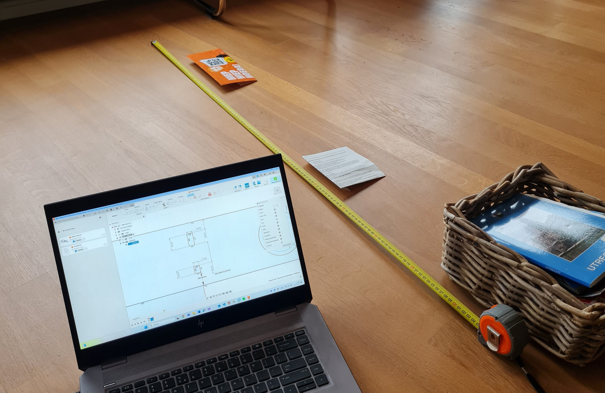
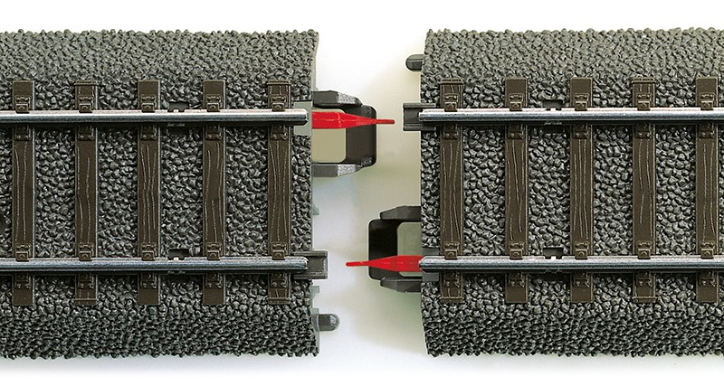

Stap voor stap beginnen
Budgetvriendelijk te werk gaan
Hoe begin je met de Bouw?
Voor de bouw ben ik eerst nagegaan wat ik wil maken. Voor mij is het essentieel om een flyover in mijn baan te hebben. Daarnaast is het goed om na te denken of je dit met de hand wilt bedienen of automatisch. Ik wil het met de hand bedienen, dus je moet er rekening mee houden dat je maar één opdracht tegelijkertijd kunt geven aan één trein. Na veel schetsen kwam ik uit op het volgende:
Nu je ideale plan klaar is, komt de realiteit om de hoek kijken. Met de Märklin-geometrie blijkt deze baan erg groot te worden. Na het opmeten van de beschikbare ruimte en het uittekenen in Fusion, weet ik precies hoeveel ruimte ik heb. Ik heb overwogen om de rails in Fusion of SCRAM (een 3D-softwareprogramma voor modelspoorbanen) te tekenen, maar uiteindelijk besloot ik dat het snelste was om wat papiertjes en stoelen neer te zetten om te markeren waar de steunbalken zitten en de rails te leggen.
Het leggen van het spoor is een leuke puzzel. Houd hierbij de Märklin-geometrie in de gaten. Zie hier de volledige PDF met maten: marklin-geometrie.pdf
Elektrotechniek
Wissels bedienen
Om de wissels automatisch te wisselen kun je ervoor kiezen om een Märklin solenoïde te kopen. Dit kost echter 13 keer zoveel als een servomotor (van €2) op dezelfde manier aan te sturen is. Deze is niet zo plat en compact waardoor het op een tafel gelegd kan worden. De servomotor steekt uit aan de onderkant van de baan maar aangezien ik mijn baan toch op een talud wil leggen is dit geen probleem en kan ik het verwerken onder de rails (ook een stuk fijner voor de bekabeling). Hieronder het 3D-ontwerp:
Hier kan je het bestand downloaden: Download link
Treindetectie
Märklin gebruikt een drie-rail-systeem waarin de middengeleider (de "puntcontacten") stroom levert aan de locomotief. De twee spoorstaven dienen normaal gesproken als massa. Bij een contactrail wordt een van de spoorstaven geïsoleerd van de rest van het circuit, zodat deze alleen stroom doorgeeft wanneer een trein met metalen wielen de rail raakt en de stroomkring sluit. Zo'n sensor heet een bezetmelder. Het nadeel hiervan is dat de geleiding vermindert. Na flink wat prutsen met verschillende schakelingen ging ik verder zoeken en kwam ik op de volgende video die precies uitlegt welk onderdeel ik wil toepassen.
Voor de bezetmelder ga ik de Okkie los gebruiken van de opstelling die in de video gebruikt wordt. Het werkt op de stroom die gebruikt wordt door de locomotief en geeft dit weer in een 5V of 0,5V signaal wat ik kan inlezen in mijn Arduino. Dit bespaart mij veel ontwerptijd en kost maar €5,95 op Arcomora. Voor uitleg van de werking raad ik deze video aan. Het nadeel hiervan is wel dat er gedetecteerd wordt of er een stroom trekkende sleepcontact in het baanvak is in plaats van of er assen in het baanvak zijn. Dit betekent dus dat er alleen locomotieven gedetecteerd worden en geen wagons. Een oplossing hiervoor is om de laatste wagon ook te voorzien van een sleper wat je dan direct kan gebruiken voor interieurverlichting.
Om de verschillende stukken baan te kunnen meten, moet je stukken isoleren. Dit doe je met de Märklin Middengeleiderisolatie Art.nr. 74030 (ook te zien in deze video). Deze kan je natuurlijk ook 3D printen. Zie hieronder het model:
Modellen te downloaden op deze link.
Fotogrammetrie
Deatails in je 3d ontwerp kan veel tijd innemen. Vooral natuurlijke dingen zoals mos groei op beton is moeilijk zelf na te maken. Daarvoor is Fotogrammetrie een gepaste optie. Door veel foto's te maken van een onderwerp en je computer een nacht te laten nadenken kom je uit op een 3d model. Met een beetje nabewerking is deze ook printbaar.
Seinen
De seinen wil ik zelf gaan 3D printen met LED-lampjes erin. Deze ga ik via een multiplexer aansturen.
Laatst bijgewerkt: